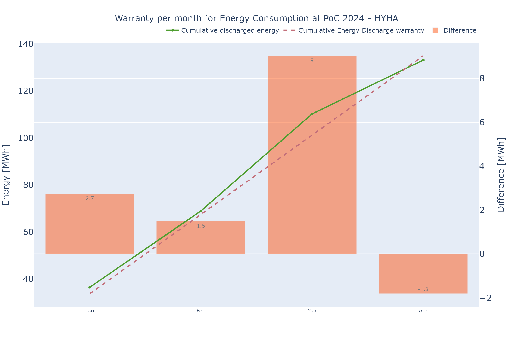
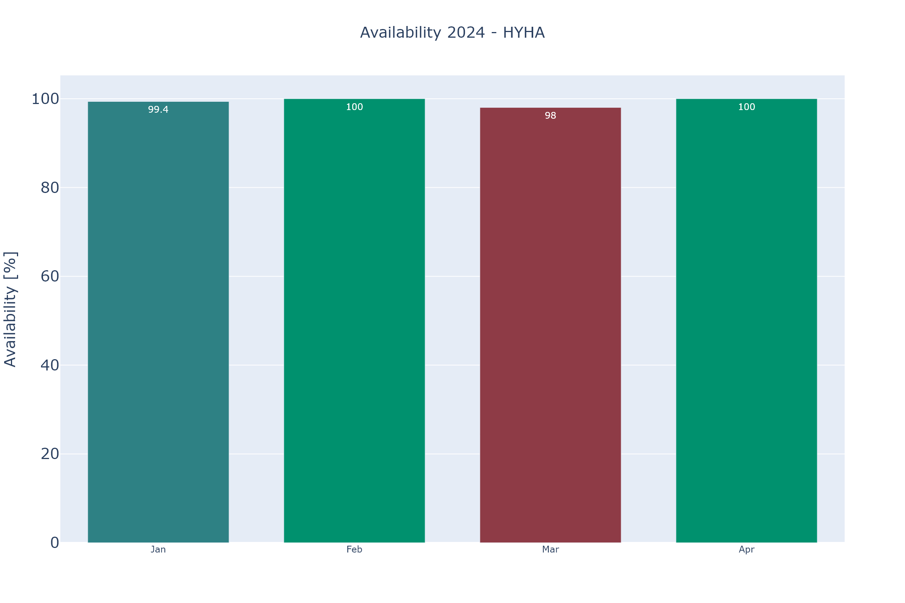
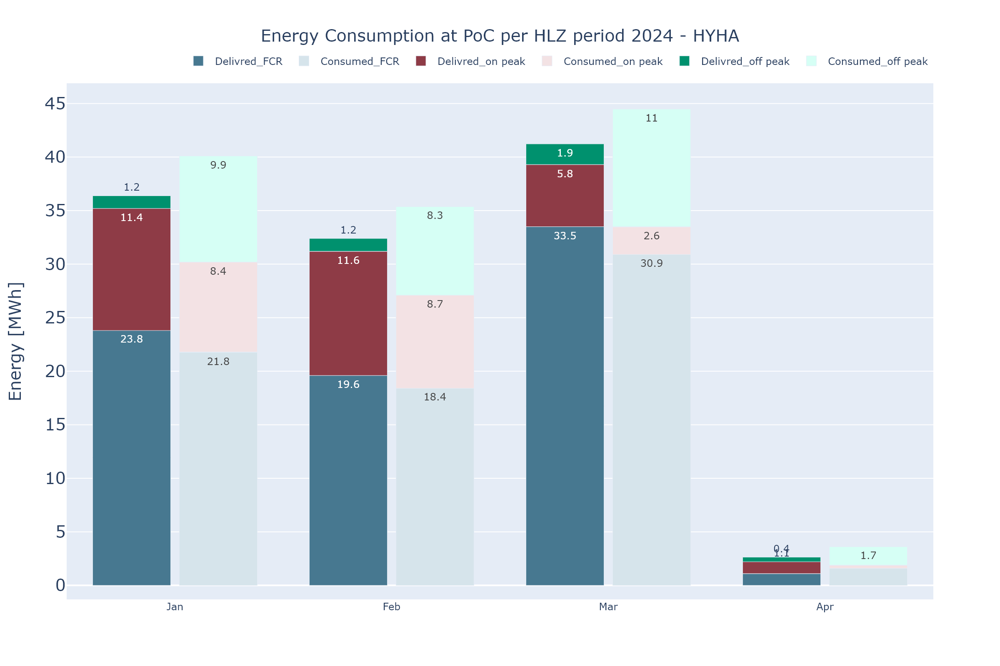
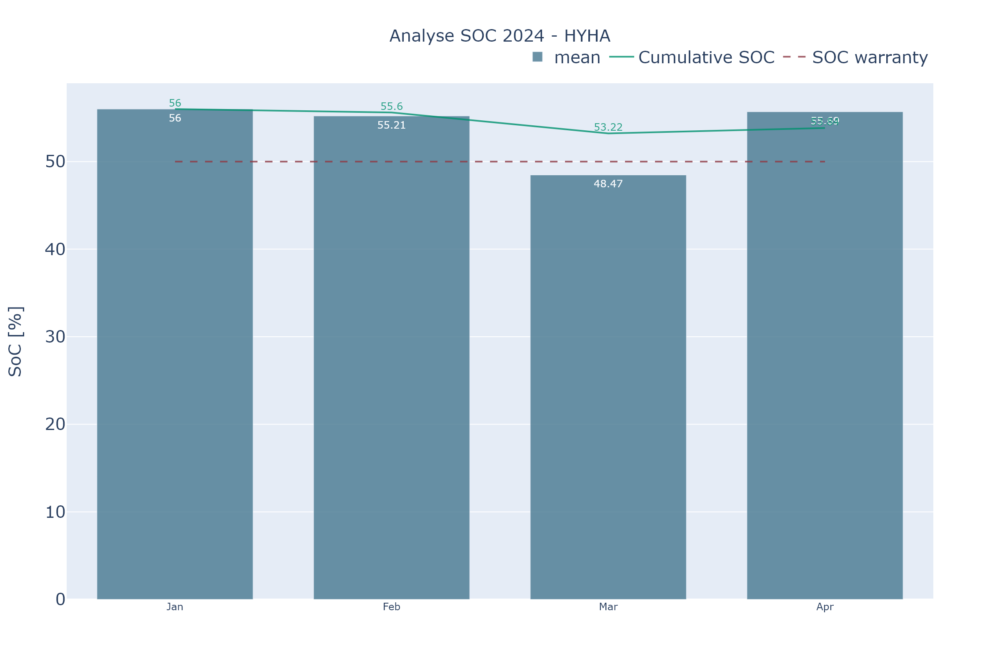
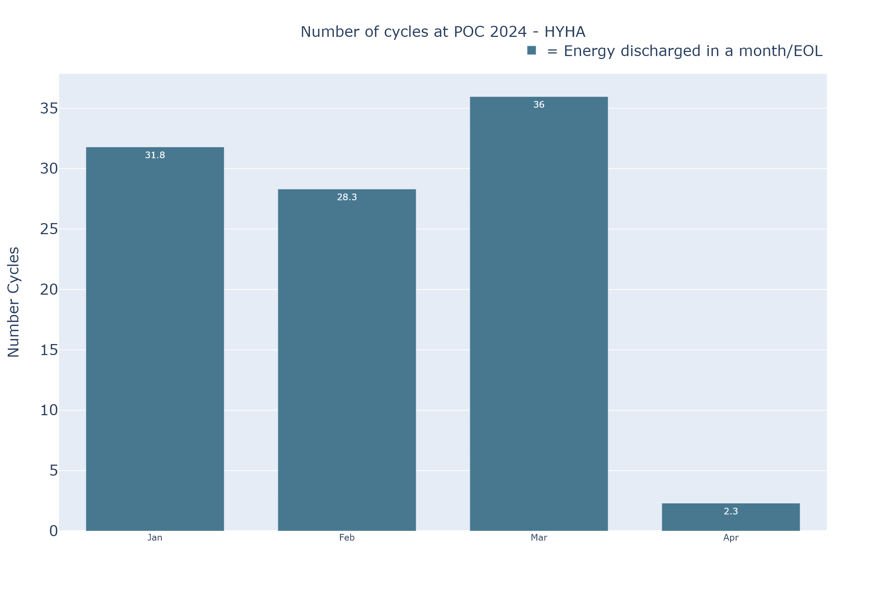

Export KPI
Dependencies
| Librairies | version |
|---|---|
| KPI_plot.py (local) | - |
| parameters_project.py (local) | - |
| inspect | - |
| pandas | 2.2.1 |
| pathlib.Path | - |
| plotly.io.pio | 5.20.0 |
| os | - |
| tqdm.tqdm | 4.66.2 |
Summary
Class used to export and create list of KPI object. Used for export the appendix, and create the "list_fig" which contain main information for KPIs.
class_name : export_data
method availaible :
* download_KPIs
* show_KPIs
* show_KPI_filtered
* download_KPI_filtered
Class
__init__(self, database, project, year, month_short) -> None
Initializes an instance of the class.
Parameters:
-
database(str): The name of the database. -
project(str): The name of the project. -
year(str): The year for the project. -
month_short(str): Month short of the current month selected
Returns:
nan(None) : No return value
Example:
# Create an instance of the class
database = "example_database"
project = "example_project"
year = "2022"
obj = export_data(database, project, year)
# Access the attributes
print("database:", obj.database)
print("project:", obj.project)
print("year:", obj.year)
print("year_short:", obj.year_short)
get_methods(self)
Intern Module to get all name of methods from KPI_plot.
Parameter:
self(self) : General information
Returns:
-
fig_store(df) : DataFrame with names and categories of KPI -
plot_method(array) : Array with all methods from KPI_plot module -
def_plot(module) : Module of plot_KPI in order to get the methods from it
Example:
# Create an instance of the class
obj = export_data(database, project, year, month_short)
# Call the get_methods method
fig_store, plot_method, def_plot = obj.get_methods()
# Print the results
print("fig_store:", fig_store)
print("plot_method:", plot_method)
print("def_plot:", def_plot)
export_appendix(self, path_export):
Module to export data and format it.
Parameters:
-
self(self): General information -
path_export(str): Path where to export the excel file.
Returns:
- nan (None) :
No return value
Example:
# Create an instance of the class
obj = export_data(database, project, year, month_short)
# Call the method
obj.export_appendix('./appendix/')
>> KPI appendix will be export.
>> Your KPI appendix is exported, you can found the file here : ./appendix/
get_list_fig(self)
Create the list_fig which will create a dataframe with names, categories and KPI object.
Long computation warning, need to cache if possible.
Parameters:
self(self) : General information
Returns:
list_fig(pd.Dataframe): dataframe with columns ['name','category','object']- list_fig['name'] (str): Name of the KPI
- list_fig['category'] (str): Name of the category of the KPI
- list_fig['object'] (KPI.KPI_fig object): Object of the KPI (more details here)
Example:
# Create an instance of the class
obj = export_data(database, project, year, month_short)
# Call the export_KPI method
fig_list = obj.get_list_fig()
Method
download_KPIs(fig_list, path:str, type='png', width=1200, height=800, scale=2)
Method for download all the figure from the given fig_list.
Parameter:
-
fig_list(df): List of figures to add in the KPI. Need to have column ['name', 'category', 'object']. Get this list from export_data.get_list_fig. -
path(str): Path where to store the png plot -
type(str): Type of file selected (Default : png)- png
- svg
- jpg
- webp
- eps
-
height(int): Height of the image (Default : 800) -
width(int): Width of the image (Default : 1200) -
scale(int): Scale of the image (Default : 2)
Returns:
nan(None) : No return value
Example:
import export_KPI
# Call the method
export_KPI.download_KPIs(fig_list, './plot_img/')
>> KPI plot will be exported.
>> [88888888______] progress bar
>> Your KPI plot are exported, you can found them here : './plot_img/
download_KPI_filtered(fig_list, category_to_download, path:str, type='png', width=1200, height=800, scale=2)
Method for download the figure from a particular categorie from the given fig_list.
Parameter:
-
fig_list(df): List of figures to add in the KPI. Need to have column ['name', 'category', 'object']. Get this list from export_data.get_list_fig. -
category_to_download(str): Name of the category to plot -
path(str): Path where to store the png plot -
type(str): Type of file selected (Default : png)- png
- svg
- jpg
- webp
- eps
-
height(int): Height of the image (Default : 800) -
width(int): Width of the image (Default : 1200) -
scale(int): Scale of the image (Default : 2)
Returns:
nan(None) : No return value
Example:
import export_KPI
# Call the method
export_KPI.download_KPI_filtered(fig_list,'1_Overview', './plot_img/')
>> KPI plot will be exported.
>> [88888888______] progress bar
>> Your KPI plot are exported, you can found them here : './plot_img/
show_KPIs(fig_list)
Method for show all the figure from the given fig_list.
Parameter:
fig_list(df): List of figures to add in the KPI. Need to have column ['name', 'category', 'object']. Get this list from export_data.get_list_fig.
Returns:
nan(None) : No return value
Example:
import export_KPI
# Call the method
export_KPI.show_KPIs(fig_list)
|  |  |
 |
 |
| ... | ... |
show_KPI_filtered(fig_list, category_to_plot)
Method for show all the figure of a specific category from the given fig_list.
Parameter:
-
fig_list(df): List of figures to add in the KPI. Need to have column ['name', 'category', 'object']. Get this list from export_data.get_list_fig. -
category_to_plot(str): Name of the category to plot
Returns:
nan(None) : No return value
Example:
import export_KPI
# Call the method
export_KPI.show_KPI_filtered(fig_list, '2_warranties')
|  |  |
| ... |